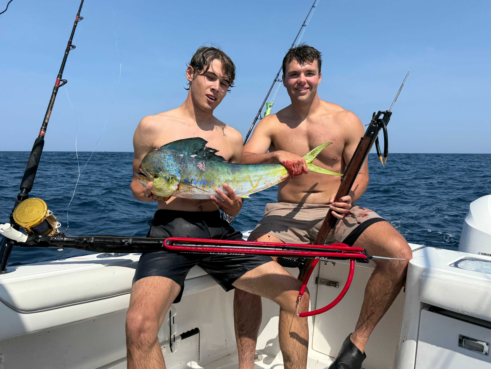

Bluewater
The Rhode Island fishery
Rhode Island sits in a rare sweet spot. From Point Judith you can run southeast across the continental shelf to the offshore canyons — Block, Atlantis, Veatch and beyond — where the cold green water gives way to warm Gulf Stream blue. When those eddies swing close in summer and fall, the bite turns on and the Ocean State becomes one of the best tuna ports in the Northeast.
The shelf edge, the lobster-pot lines, temperature breaks and bait-stacked structure all concentrate pelagic fish within range of our boats. A long run, a good forecast and the right water color are the difference between a quiet day and a box full of fish — and reading that water is what we do.
What swims out there
The summer-into-fall mainstay of the canyon run. Yellowfin chew on trolled spreads, chunks and jigs — fast, hard-pulling fish that test tackle and arms alike. Peak window is roughly July through October.
From school-size to giants, bluefin show on the inshore lumps and out on the edge. Brute strength and long screaming runs make these the heavyweight prize of Rhode Island's offshore season.
Acrobatic, electric-green and a blast on light tackle, mahi stack up under hi-flyers, weed lines and floating debris offshore through the warm months. Great eating and great fun.
Makos and threshers push into our offshore waters in summer. Heavy tackle, big runs and serious fights — a true big-game experience within reach of Point Judith.
Speed demons of the warm blue water. Wahoo ambush trolled spreads at blistering speed, lighting up the reel with sizzling, drag-screaming runs — a high-octane bonus when the offshore water lights up in late summer and fall.
When the trolling slows, the deep-water bottom delivers. Golden tilefish along the shelf and cod on the offshore wrecks and ledges round out a full offshore program.
The bluewater prizefighter. White and blue marlin prowl the warm Gulf Stream edge in late summer, lighting up the spread with crashing strikes, blistering runs and acrobatic leaps — the ultimate big-game thrill within range of Point Judith.
The broadbill of the deep. Daytime deep-drops a thousand feet down and electric nighttime baits put one of the ocean's hardest-fighting, finest-eating gladiators in the boat — a true bucket-list battle off the canyons.
The canyon heavyweight. Bigeye haunt the deep edge and feed hardest at first light and after dark, dragging deep and pulling like a freight train — a prized, hard-earned catch on the long offshore runs.
The longfin of the bluewater — the true albacore tuna. Hard-charging schools crash trolled spreads on the warm offshore breaks, peeling drag on light gear and filling the box with prime, white-meat table fare.

How we run it
Offshore trips are full-day or overnight runs built around the forecast and the latest reports. We bring the heavy tackle, the spread and the local know-how — you bring the crew and the energy. When the water turns blue, it's a beatdown.
Book an offshore trip →Lock in a date and we'll put you on bluewater fish.
Book Your Trip